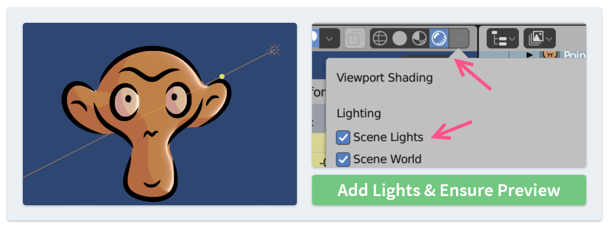
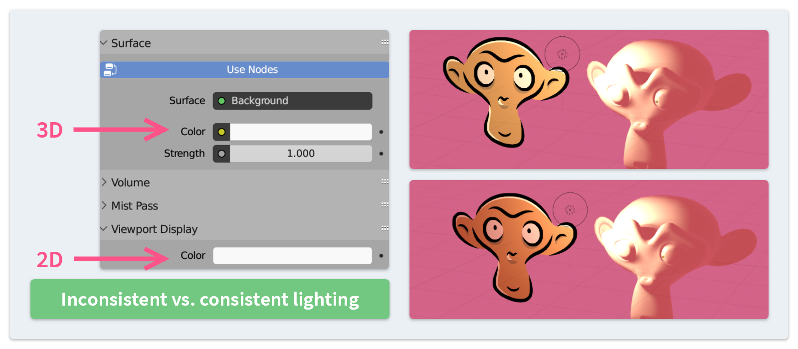
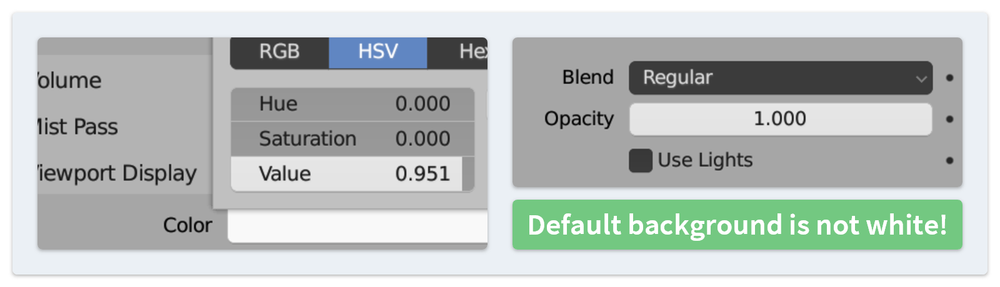
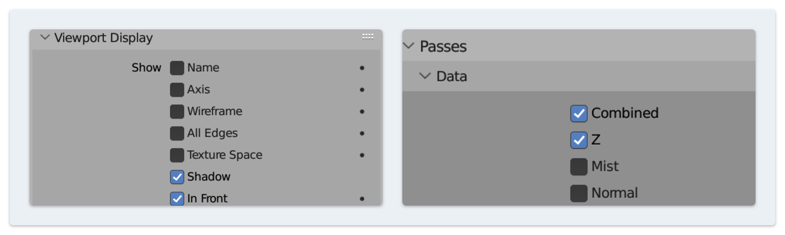

Scene Setup #
Blender comes with a template start file “2D Animation” that is convenient for painting. However, there are also some tricky parts in setting up the scene, especially when we put Grease Pencil and 3D objects in the same scene, including the meshes generated by this add-on. Here are some tips written in the form of FAQ.
Why cannot I see any shading effect when I generate meshes from Grease Pencil?

The default 2D Animation scene does not have any light sources. So we have to add some light objects to the scene ourselves.
In addition, please change the Viewport Shading to Render Preview mode and make sure that the scene lights are enabled.
If you do not want to set light sources, you can try the MatCap materials when generating meshes, which have the lighting information baked in and do not need scene lights.
Why is the lighting on 2D and 3D objects not consistent?

The environment background colors for 2D and 3D objects are not the same. In the [Scene]>[World] panel:
- the lighting of 3D objects is determined by
SurfaceandVolumetabs, but - the lighting of Grease Pencil is determined by the
Viewport Displaytab.
Please make sure that these two color values are the same if you want to make the lighting more consistent across all objects.
Why is the color drawn on the canvas slightly different from my material setting?

You may notice that the color displayed in the viewport is slightly different from the color you selected in the Brush or Material settings. This can cause some problems, such as getting the wrong color when using the Eyedropper tool.
This happens because the default background color is not actually white, although it looks very similar. The exact color is #F9F9F9.
To keep the color as it is, you can either set the viewport background color to pure white or uncheck the “Use Lights” option of the Grease layer.
Why does Grease Pencil obstruct all 3D objects regardless of depth, unlike what I see in the preview?

There are two options determining whether Grease Pencil will be rendered above all 3D objects:
- In the
[Scene]>[ViewLayer]panel, when Z pass is disabled (as by default), Grease Pencil objects will be rendered above all 3D objects. (But in the preview, it appears at the correct location.) - In the
[Object]properties panel, when “In Front” is checked in theViewport Displaytab, this Grease Pencil object is both rendered and previewed at the top.